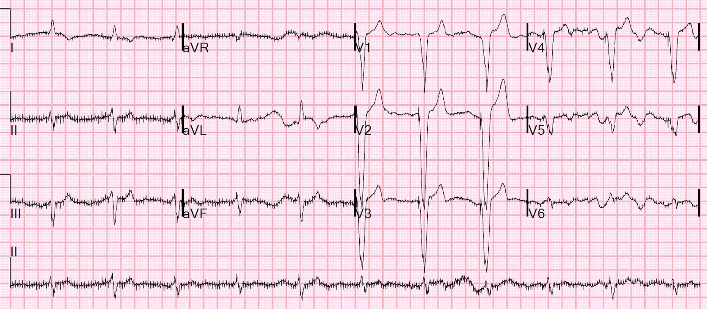
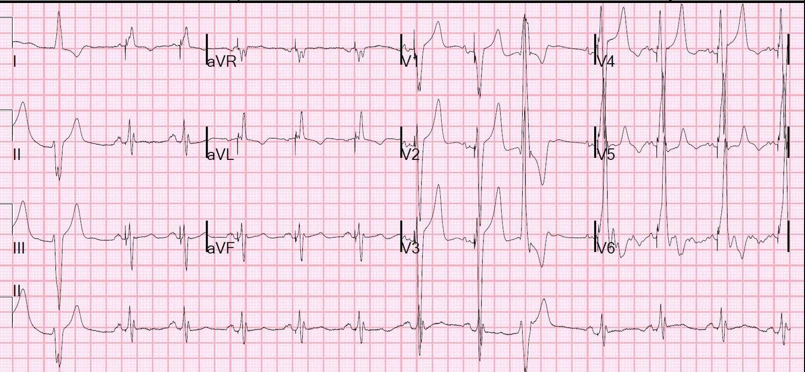
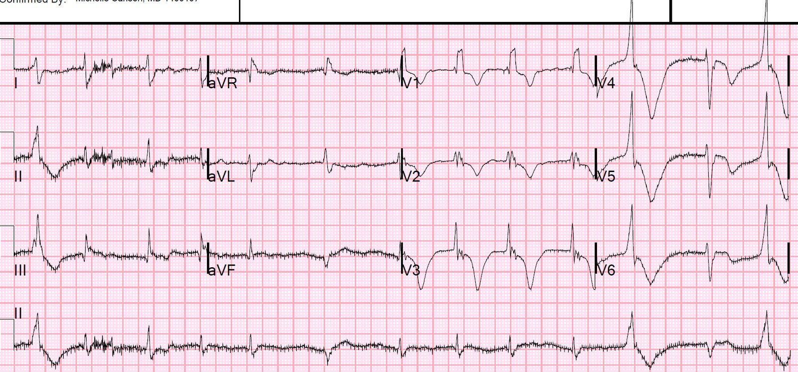
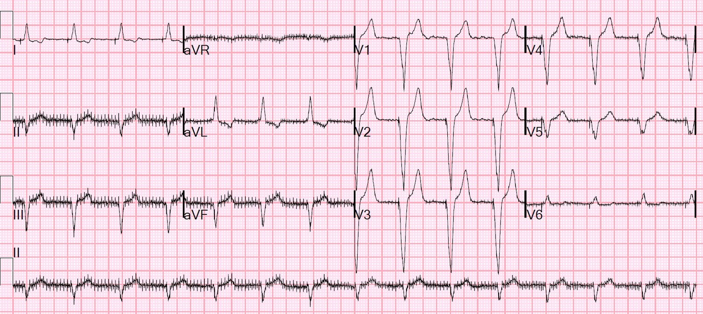
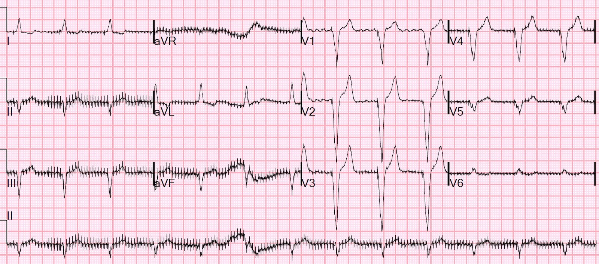

21/02/2019 — Máy tính thường không chẩn đoán được rung nhĩ trong nhịp tạo nhịp thất, và điều đó có thể dẫn tới thảm họa
Bản dịch tiếng Việt của bài "Computer often fails to diagnose atrial fibrillation in ventricular paced rhythm, and that can be catastrophic" – Dr. Smith’s ECG Blog. Giữ nguyên toàn bộ 5 hình ảnh của bản gốc.
Ca 1.
Một bệnh nhân cao tuổi đến viện vì đột quỵ thiếu máu não diện rộng gây liệt nửa người, khởi phát 24 giờ. Loạt phim CT đột quỵ cho thấy huyết khối động mạch não giữa.
Bệnh nhân được ghi một điện tâm đồ:
Ca 1, điện tâm đồ 1:


Trả lời: Không có gai tạo nhịp nhĩ. Đây là rung nhĩ (máy tính không chẩn đoán được) nhưng với nhịp thất đều vì thất được tạo nhịp đều đặn bởi máy tạo nhịp nhân tạo (nhịp tạo nhịp thất (ventricular paced rhythm), VPR). Điều này dễ đánh lừa cả máy tính lẫn bác sĩ đọc lại (overread), vì một trong những cách chính để nhận ra rung nhĩ là tần số tim không đều hoàn toàn.
Ca 2
Bệnh nhân này đến viện cùng ngày: bà có tiền sử rung nhĩ, suy tim sung huyết (CHF), bệnh phổi tắc nghẽn mạn tính (COPD), tăng huyết áp (HTN), tai biến mạch máu não (CVA), đang dùng thuốc chống đông Coumadin, nay đến khám vì khó thở.
Điện tâm đồ của ca 2 (điện tâm đồ 2):


Không hề nhắc đến nhịp xoang hay bất kỳ chẩn đoán nhịp nhĩ nào, dù nhịp xoang là rõ ràng. Dĩ nhiên cũng có VPR và các PVC.
Ca 1, muộn hơn trong ngày (điện tâm đồ 3):


Cũng có sóng T thần kinh trung ương (CNS T-waves) (do bệnh cơ tim do stress, thường gặp trong đột quỵ cấp nặng, và đã được xác nhận bằng nhiều rối loạn vận động thành trên siêu âm tim chính thức).
Có các điện tâm đồ cũ của ca 1 (bệnh nhân đột quỵ):
Ca 1, điện tâm đồ cũ thứ nhất (điện tâm đồ 4)


“Máy tạo nhịp nhĩ điện tử”
“Máy tạo nhịp thất điện tử”
Bạn nghĩ gì?
Một lần nữa, không có gai tạo nhịp nhĩ. Nhiều khả năng có rung nhĩ nền nhưng cả máy tính lẫn bác sĩ đều không chẩn đoán được. Bác sĩ dường như tin rằng nếu máy tính đã phát hiện ra thì hẳn nó phải có ở đó. Nhưng đó có thể không phải là một giả định chính xác.
Thêm một điện tâm đồ cũ thứ hai (điện tâm đồ 5):


“Nhịp tạo nhịp thất. Nhiễu làm việc đọc trở nên khó khăn.”
Có nhiều gai nhỏ. Đó là nhiễu, và không liên quan gì đến máy tạo nhịp tim. Đôi khi có thể thấy nhiễu tương tự từ các thiết bị hệ thần kinh trung ương. Như vậy, điện tâm đồ 5 cũng có rung nhĩ mà không được chẩn đoán.
Như vậy ở đây có nhiều thất bại trong chẩn đoán nhịp nhĩ, của cả máy tính lẫn bác sĩ đọc lại, do sự hiện diện của VPR:
Điện tâm đồ 1 có rung nhĩ (không được chẩn đoán), chứ không phải tạo nhịp nhĩ
Điện tâm đồ 2 có nhịp xoang, nhưng không được nhắc đến.
Chỉ điện tâm đồ 3 được chẩn đoán đúng rung nhĩ, vì không có gai tạo nhịp thất và nhịp không đều.
Điện tâm đồ 4 có rung nhĩ bị chẩn đoán nhầm thành máy tạo nhịp nhĩ
Điện tâm đồ 5 có rung nhĩ không được chẩn đoán
Như vậy, với ca 1, 2 điện tâm đồ cũ đã không chẩn đoán được rung nhĩ. Ở một điện tâm đồ, chẩn đoán bị sai: “Máy tạo nhịp nhĩ điện tử” được cả máy tính lẫn bác sĩ đọc lại chẩn đoán. Ở điện tâm đồ còn lại, cả máy tính lẫn bác sĩ đều không đưa ra chẩn đoán nhịp nhĩ nào.
Như vậy, bệnh nhân ca 1 chưa bao giờ được chẩn đoán rung nhĩ, dù rung nhĩ vẫn hiện diện, và rung nhĩ cuối cùng đã gây ra đột quỵ thảm khốc.
Việc thuật toán tự động không chẩn đoán được rung nhĩ như thế này rất thường gặp. Khi có VPR, nhiều thuật toán thông thường thậm chí không cố đưa ra chẩn đoán nhịp nhĩ. Và điều này dẫn các bác sĩ đi lạc hướng. Dưới đây là một vài bài báo quan trọng về chủ đề này. Có rất nhiều y văn về việc chẩn đoán nhầm rung nhĩ bởi các thuật toán máy tính thông thường.
Hơn nữa, khi một thuật toán thông thường có chẩn đoán rung nhĩ, thì đó là chẩn đoán quá mức trong tới 20% trường hợp. Rất thường gặp tình trạng các lỗi này của máy tính không được bác sĩ đọc lại sửa.
Những điểm cần học:
1. Mọi chẩn đoán nhịp nhĩ của thuật toán máy tính đều phải được xem xét kỹ lưỡng.
2. Thuật toán máy tính có thể thậm chí không cố đưa ra chẩn đoán nhịp nhĩ khi có VPR.
3. Rung nhĩ khi có VPR thường sẽ có nhịp đều, do đó khó nhận ra.
4. Ngay cả chẩn đoán “nhịp tạo nhịp nhĩ” của máy tính cũng có thể là dương tính giả.
Bình luận của K. Wang:
Khi chúng ta đọc một
điện tâm đồ tạo nhịp thất và thấy các QRS xuất hiện đều đặn sau mỗi
gai tạo nhịp, chúng ta hài lòng nói rằng máy tạo nhịp hoạt động
bình thường và việc đọc điện tâm đồ dừng ở đó. Tuy nhiên, điều rất quan trọng
là xem các tâm nhĩ đang làm gì; chúng có ở nhịp xoang không (có hoặc
không liên hệ với QRS)?, dẫn truyền ngược dòng?,
rung?, cuồng? Nếu rung, bệnh nhân có cùng
nguy cơ thuyên tắc hệ thống như trong rung nhĩ không tạo nhịp (thông thường).
Chuyển đạo V1 là chuyển đạo tốt nhất để thấy các tâm nhĩ đang làm gì
(xem điện tâm đồ 2 của ca 2 ở trên). Nhân tiện, có vẻ như chúng ta cũng đang đối mặt
với tăng kali máu ở ca 2.
K. Wang.
Diagnostic performance of a computer-based ECG rhythm algorithm (Hiệu năng chẩn đoán của một thuật toán nhịp điện tâm đồ dựa trên máy tính)
https://www-sciencedirect-com.ezp2.lib.umn.edu/science/article/pii/S0022073605000488 (bài báo trên ScienceDirect)
Trong 4297 điện tâm đồ liên tiếp làm cơ sở cho
báo cáo này, 13.1% (565/4297) cần sửa lại kết quả đọc nhịp dựa trên máy tính. Các lỗi thường gặp nhất
liên quan đến những nhận định diễn giải ở bệnh nhân có
máy tạo nhịp: trong 343 điện tâm đồ có hoạt động máy tạo nhịp, chiếm 8.0% số điện tâm đồ của nghiên cứu, 75.2% (258/343) cần
sửa lại, do đó 45.7% tổng số nhận định nhịp không chính xác
trong quần thể này xảy ra ở bệnh nhân có máy tạo nhịp.
Lỗi thường gặp nhất trong phân nhóm này là thuật toán
không phát hiện được các nhịp nền rõ ràng, chẳng hạn
như nhịp xoang kèm tạo nhịp hai buồng hoặc
rung nhĩ nền, trong 40.2% (138/343). Tạo nhịp hai buồng
là một vấn đề rõ rệt, với độ đặc hiệu 100% nhưng
độ nhạy chỉ 28.1% (73/260), thường gặp nhất do
việc nhận diện nhầm tương đối nhỏ những bệnh nhân này
chỉ là tạo nhịp thất. Quan trọng hơn là hoàn toàn
không nhận ra hoạt động máy tạo nhịp ở 10.2% bệnh nhân được tạo nhịp
(35/343).
Vì các thuật toán phát hiện máy tạo nhịp có những vấn đề chẩn đoán đặc biệt và những giải pháp kỹ thuật đặc biệt,
các bệnh nhân này đã bị loại khỏi phân tích dữ liệu tiếp theo,
vốn tập trung vào 3954 điện tâm đồ liên tiếp còn lại không
tạo nhịp trong nhóm. Các nhịp nguyên phát
chiếm ưu thế được bác sĩ xác nhận ở quần thể bệnh nhân không tạo nhịp này gồm
nhịp xoang (90.5%), rung nhĩ (6.3%), cuồng nhĩ
(1.0%), và nhịp nhanh nhĩ (0.9%).
Misdiagnosis of atrial fibrillation and its clinical consequences (Chẩn đoán nhầm rung nhĩ và các hậu quả lâm sàng)
https://www.sciencedirect.com/science/article/pii/S0002934304004784 (bài báo trên ScienceDirect)